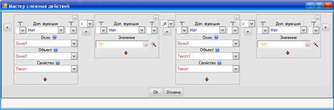

Collapse all
Collapse all Description
Description
Master complex action is the most difficult part of the IDE algorithm, but it offers tremendous opportunities to create a variety of software solutions.
The installation wizard buttons with magic wand , which are located on the right of the text fields (eg Section Action .
Let us consider the process of creating a complex action on the example of calculating how many years have passed since imposed text field year:

Here glued (or merged with another) string "passed years:" with the result of calculation, in which year imposed text box ( Window1.Tekst1.Tekst) subtracted current year . For example, if a text box, enter "2000" and now "2009" year, result of a complex action, which is created in the wizard will: "It has been years: -9", because "2000" - "2009" will be "-9". If we click OK the wizard will give us the result its work. This is a complex action, in this case: "It took years:"&(Module (Window1.Tekst1.Tekst) - _Useful objects._Data._Year (_Useful objects._Data._Today))
Now consider each element separately Wizard:
| 1 - Power Wizard | Wizard consists of blocks , of which complex actions are going. block can be any number, they added button 2 and deleted button 4 . Each unit can be in two states: a simple - when you simply enter data (such as in the first block in the figure) and in the complex - where you can select the properties of an object (the second and third block of the figure). A change of these button state 6 . |
| 2 - Add a block | This button adds a new block at the place where this button is located. |
| 3 - Setting the brackets | Each unit has the opportunity to segregate its brackets. There is a Left and right brackets, their number is not limited and the number of left may differ from the number of rules. For example, if you want the wizard to create an action ((-2 ") +" 3 "), in the first block (which will be the number" -2 ") must choose 2 left brackets and 1 right. And in the second block (which will be the number 3) to select 1 of the bracket. |
| 4 - Remove the block | This button removes block. |
| 5 - Additional feature | Each block can be further processed function . All the additional features are conventional mathematical operation - the root, sine, cosine, rounding, change the sign. In this case, the block number 2 is used function module (function converts a negative into a positive number) in case impose such "-2000". =) |
| 6 - Change of block | Each Block can be in two states: in simple - when you simply enter data (such as in the first block in the figure) and complex - where you can select the object properties (second and third block of the figure). This button and change of the block with a simple to complex and vice versa. |
| 7 - Communication units | All units are connected with each other definite link . Communication is mathematical (addition, division, adhesion) and logical (unevenly, more, less, _AND, _ANDLI). In this case, we mathematical connection , ie blocks linked some mathematical operation, in this case, the 2nd and 3rd block linked subtraction . Thus, the block number 2 is minuend , and the block number 3 subtrahend . Between blocks 1 and the difference between blocks 2 and 3 is plus , so they are linked adding and the result of the sum will be terms block number 1 and (block number 2 - unit number 3) . addition to mathematical connection exists logical (equal, unequal, greater, less or equal to). It will come in handy when creating conditions and cycles . It is the result of conditions or that the condition true , or that the condition true . So if you want to create a condition, then use the logical operators, which expressly indicate either "Yes" , or "No" . For example, the expression "2" < "3" will be either correct the condition, or incorrect. The other not given . In this case it is true. In addition, if the condition is complicated , then use a special logic operations: _AND and _ANDLI . If the relationship between the two conditions _AND , then the overall result they will be "Yes" (ie, together they will be loyal to the condition) only when both conditions are true . For example, if you want to check that the number entered in the text field was greater than 5 and less than 10, then in the wizard it would look like this:  Similarly, the combined effect of two conditions with communication _ANDLI will correct the condition when At least one of the conditions right . For example, if you want to check that the number entered in the text field was less than 2 or more 7, then in the wizard it would look like this: Window1.Window1.Tekst < "2" _ANDLI Window1.Tekst1.Tekst> "7" |
See also